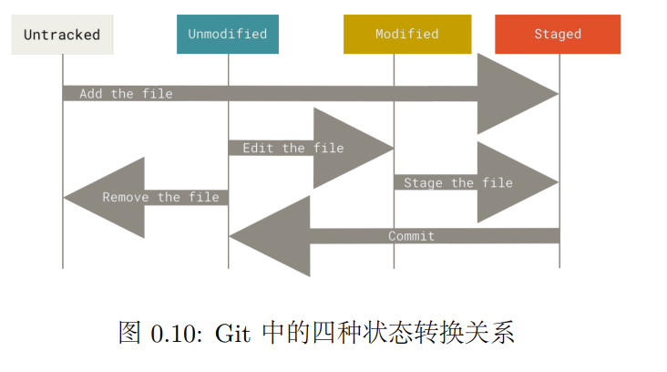
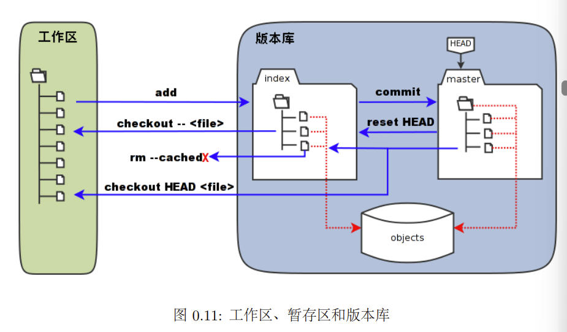
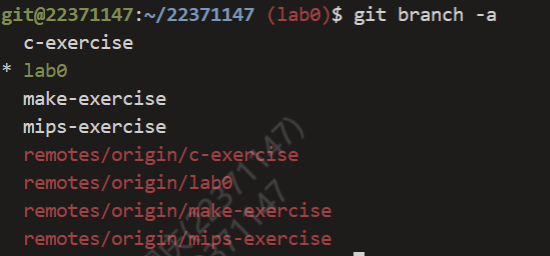

BUAA_OS_lab0
操作系统lab0学习日记
1 学习阶段的难点分析与体会
1.1 基础命令和快捷键
- Ctrl+C 终止当前程序的执行
- Ctrl+Z 挂起当前程序
- Ctrl+D 终止输入（若正在使用 shell，则退出当前 shell）
- Ctrl+L 清屏
1 | |
1.2 ctags
回到命令行界面，执行命令ctags -R *，会发现在该目录下出现了新的文 件 tags，接下来就可以使用一些 ctags 的功能了：
按下 Ctrl+ ]，便可以跳转到函数定义处；再按下 Ctrl+T 或 Ctrl+O（有 些浏览器 Ctrl+T 是新建页面，会出现热键冲突），便可以回到跳转前的位置。
1.3 git
git四种状态：


详见指导书p22，图中我们可以看出此时 HEAD 实际是指向 master 分支的一个“指针”。所以图示 的命令中出现 HEAD 的地方可以用 master 来替换。
当执行 git rm --cached<file>命令时，会直接从暂存区删除文件，工作区则 不做出改变，实现从暂存区删去不想继续跟踪的文件
git checkout -- <file>如果在工作区中对多个文件经过多次修改后，发现编译 无法通过了。如果尚未执行 git add，则可使用本命令将工作区恢复成原来的样子。作用和git restore类似
git reset HEAD <file>上一条命令是在未执行 git add命令便修改文件生效并 放入暂存区，可使用git checkout 命令。那么如果不慎已经执行了git add，则 可使用本命令。再对需要恢复的文件使用上一条命令即可。
git reset --hard进行版本回退，使用这条命令可以进行版本回退或者切换到任何一个版本。它有两种用法：第一 种是使用HEAD类似形式，如果想退回上个版本就用HEAD^，上上个版本的话就用HEAD^^，要是回退到前 50 个版本则可使用HEAD~50来代替；第二种就是使用hash值，使用hash值可以在不同版本之间任意切换，足见hash值的强大。但是，它强制覆盖了工作目录中的文件。若该文件还未提交，Git 会覆盖它从 而导致无法恢复。
git branch,
选项：
-D 强制删除一个指定分支
-a 查看所有的原地和本地分支

1.4 linux进阶
find:使用 find 命令并加上 -name 选项可以在当前目录下递归地查找符合参数所示文件 名的文件，并将文件的路径输出至屏幕上。
grep:grep 命令可以从文件中查找包含 pattern 部分字符串的行，并将 该文件的路径和该行输出至屏幕
chmod:+ 表示增加权限、- 表示取消权限、= 表示唯一设定权 限。r 表示可读取，w 表示可写入，x 表示可执行，X 表示只有当该文件是个子目录或者 该文件已经被设定过为可执行。
diff:比较文件差异，-b 不检查空白字符的不同，-B不检查空行，-q仅显示有无差异不显示详细信息
sed:
选项（常用）：
- -n 安静模式，只显示经过 sed 处理的内容。否则显示输入文本的所有内容。
- -i 直接修改读取的档案内容，而不是输出到屏幕。否则，只输出不编辑。
-e允许在同一行类执行多条命令
命令（常用）：
- [行号]a[内容] 新增，在行号后新增一行相应内容。行号可以是“数字”，在这一行之后新增，不写行号时，在每一行之后新增。使用 $ 表示最后一行。后面的命令同理。
- [行号]c[内容] 取代。用内容取代相应行的文本。
- [行号]i[内容] 插入。在当前行的上面插入一行文本。
- [行号]d 删除当前行的内容。
- [行号]p 输出选择的内容。通常与选项-n 一起使用。
- s/re/string 将 re（正则表达式）匹配的内容替换为 string。
awk:awk ‘pattern action’ file，pattern 为条件，action 为命 令，file 为文件。
1.5 shell
$n就表示第几个参数，$#表示传递参数的个数，$*表示传递的全部参数
2 Thinking
Thinking 0.1
问题：思考下列有关 Git 的问题：
- 在前述已初始化的 ~/learnGit 目录下，创建一个名为 README.txt 的文件。执 行命令 git status > Untracked.txt（其中的 > 为输出重定向，我们将在 0.6.3 中 详细介绍）。
- 在 README.txt 文件中添加任意文件内容，然后使用 add 命令，再执行命令 git status > Stage.txt。
- 提交 README.txt，并在提交说明里写入自己的学号。
- 执行命令 cat Untracked.txt 和 cat Stage.txt，对比两次运行的结果，体会 README.txt 两次所处位置的不同。
- 修改 README.txt 文件，再执行命令 git status > Modified.txt。
- 执行命令 cat Modified.txt，观察其结果和第一次执行 add 命令之前的 status 是 否一样，并思考原因。
解答：新建README.txt文件后，文件处于Untracked状态，文件中添加部分内容，git add后会处于staged状态。先git commit文件接下来再修改文件，文件会处于Modified状态
Thinking 0.2
问题：上图中思考一下箭头中的 add the file 、stage the file 和 commit 分别对应的是 Git 里的哪些命令呢？
解答：
git addgit addgit commit
Thinking 0.3
问题：
- 代码文件 print.c 被错误删除时，应当使用什么命令将其恢复？
- 代码文件 print.c 被错误删除后，执行了 git rm print.c 命令，此时应当 使用什么命令将其恢复？
- 无关文件 hello.txt 已经被添加到暂存区时，如何在不删除此文件的前提下将其移出暂存区
解答：
git checkout --print.cgit reset HEAD print.c && git checkout --print.cgit rm -- chched print.c
Thinking 0.4
版本回退中，git reset --hard后面添加HEAD^可以回到上一版本，HEAD~32这样最多支持回到上五十个版本，此外也使用 hash 值可以在不同版本之间任意切换。
Thinking 0.5
1 | |
Thinking 0.6
echo echo Shell Start 直接把“echo Shell Start” 作为字符串输出；
echo (反顿号)echo Shell Start(反顿号)是将 “echo Shell Start” 的输出作为 外层echo 的输入，故会输出 Shell Start；
echo (单引号)echo Shell Start(单引号)直接把“echo Shell Start” 作为字符串输出
3 lab0作业debug阶段的易错点
3.1 脚本执行参数不能丢
在./search.sh 时未输入一下参数会爆出重定向有歧义（只是其中之一）
1 | |
3.2 Makefile中的问题
.PHONY后面跟的目标都被称为伪目标，也就是说我们 make 命令后面跟的参数如果出现在.PHONY 定义的伪目标中，那就直接在Makefile中就执行伪目标的依赖和命令。不管Makefile同级目录下是否有该伪目标同名的文件，即使有也不会产生冲突。另一个就是提高执行makefile时的效率。- 如下,如果执行all会同时执行fibo和clean对应命令
1 | |
3.3 gcc
-I参数是用来指定头文件目录
-l参数就是用来指定程序要链接的库
1 | |
这段代码作用:
这段代码使用了gcc编译器将两个目标文件（fibo.o和main.o）链接在一起，生成一个名为fibo的可执行文件。通常，这种编译方式适用于将程序分成多个源文件编写，然后分别编译成目标文件，最后将它们链接在一起以生成最终的可执行文件。
4 Exercice总结
4.1 Exercise 0.1
palindrome.c代码补全，实现回文数判断，核心思路：将数字n的各位上的数字存到数组中进行比对
1
2
3
4
5
6
7
8
9
10
11
12
13
14
15
16
17
18
19
20
21
22
23
24
25
26
27#include <stdio.h>
int main {
int n;
scanf ("%d",&n);
int flag = 0;
int i = 0,j = 0;
while (n > 0) {
a[i++] = n % 10;
n /= 10;
}
j = i - 1;
i = 0;
while (i < j) {
if (a[i] != a[j]) {
flag = 1;
break;
}
i ++;
j --;
}
if (flag) {
print("Y\n");
} else {
print("N\n");
}
return 0;
}
```shell
gcc -o palindrome palindrome.c1
2
3
4
5
6
7
3. sed指令的使用
```shell
#实现通过命令 bash hello_os.sh AAA BBB，在 hello_os.sh 所处的目录新建一个名为 BBB 的文件，内容是AAA 文件的第 8、32、128、512、1024 行的内容提取
sed -n '8p;32p;128p;512p;1024p' $1 > $2
#-n 表示在安静模式下进行文件复制,co指令的使用
1
2cp -r src/* dst/
re dst/sh_test/hello_os.sh
4.2 Exercise 0.2
删除和重命名的使用
1
2
3rm -r "file$a" #删除file4(若$a == 4)
mv ./"file$a" ./"newfile$a"
let a=a+1 #使得a递增，注意不要加些空格
4.3 Exercise 0.3
grep与awk的使用
1 | |
4.4 Exercise 0.4
sed使用1
2#将$1文件中的$s2替换为$s3
sed -i "s/$2/$3/g" $1Makefile编写1
2
3
4
5
6
7
8
9
10
11
12
13
14
15
16
17
18
19
20
21内部Makefile
1 all: fibo main
2
3 fibo: fibo.c
4 gcc -I ../include -c fibo.c
5
6 main: main.c fibo.o
7 gcc -I ../include -c main.c
8
9 clean:
10 rm *.o
外部
1 all: fibo
2
3 fibo:
4 cd code && make
5 gcc ./code/fibo.o ./code/main.o -o fibo
6
7 clean:
8 rm ./code/fibo.o
9 rm ./code/main.o